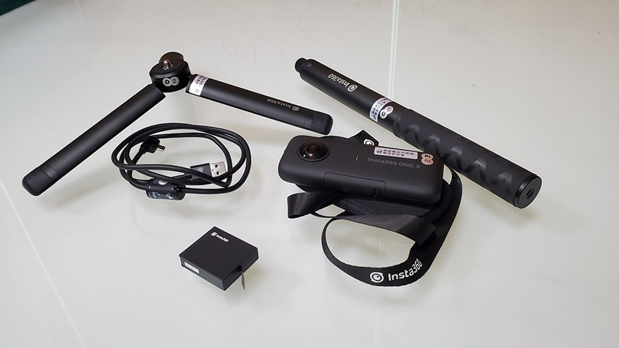
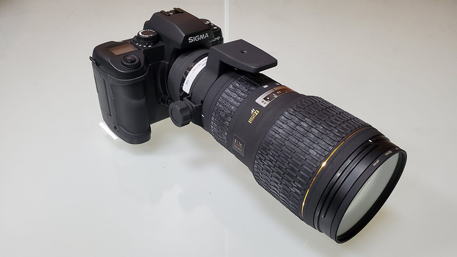
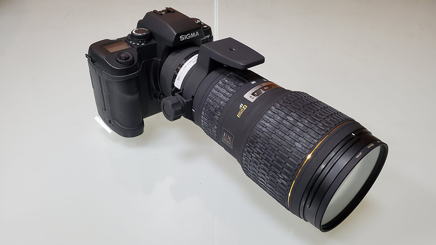

國立中興大學數位人文與資訊應用學程
學程目標
本學程之設置乃基於本校文學院相關系所師資整合及校內其他教學單位的課程認列合作，主要目的是希望養成本校學生具備跨領域數位人文能力與素養。透過本學程規劃之核心、技術及應用課程，能培養學生的數位人文專業能力。藉由跨領域資訊應用能力的訓練，增進學生建立數位人文觀念及應用實務技能，期能提升未來就業與升學的競爭能力。
修課規定
本學程包含核心課程、技術課程與應用課程三類。
- 核心課程為必修，技術課程至少選修2學分，應用課程至少選修2學分，其中應修課程至少有6學分不屬於學生主修、輔系、其他主修學程應修之課程，合計修習達15學分即可獲頒證書。
- 微學分學程認證為9學分，須包含核心課程：數位人文概論（2學分）、技術課程至少選修2學分、應用課程至少選修2學分，其中應修課程至少有6學分不屬於學生主修、輔系、其他主修學程應修之課程。
- 本學程納入部分院外課程作為學分抵認課程，最多抵認技術或應用選修課程2學分。
- 凡曾修習「數位人文與典藏應用學程」課程之學分皆得抵認為本學程學分。
申請學程
- 中興大學學生皆可申請；惟本學程為日間部課程，夜間部學生須遵守「L3-04國立中興大學學士班與進修學士班學生互選課程辦法」。
- 學分學程申請表經所屬系所主管核准後，應於本學程公告之申請期限內，將同意書送至學程辦公室。
- 學分學程未修畢，不影響畢業年限，亦無須辦理退出。
- 跨領域學分學程，符合課程規定，並合計修習達15學分即可獲頒證書。
- 微學分學程，符合課程規定，並合計修習達9學分即可獲頒證書。
- 學分學程證明書的申請期限，為每學期的期末考後兩週內。
學程設備
本學程所管理之教學資源能提供本學程師生合理使用。
  
